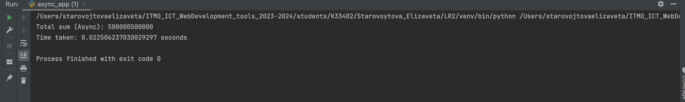
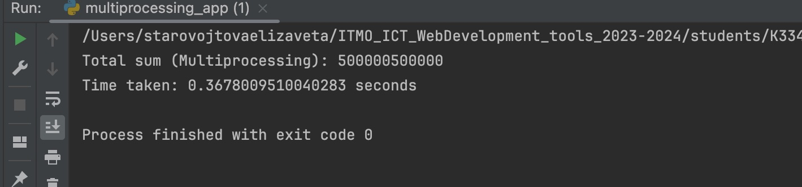

Task 1
Описание
Напишите три различных программы на Python, использующие каждый из подходов: threading, multiprocessing и async. Каждая программа должна решать считать сумму всех чисел от 1 до 1000000. Разделите вычисления на несколько параллельных задач для ускорения выполнения.
Async
import asyncio
import time
async def calculate_partial_sum(start, end):
partial_sum = sum(range(start, end))
return partial_sum
async def calculate_sum():
num_tasks = 5
chunk_size = 1000000 // num_tasks
tasks = []
start_time = time.time()
for i in range(num_tasks):
start = i * chunk_size + 1
end = (i + 1) * chunk_size + 1 if i < num_tasks - 1 else 1000001
task = asyncio.create_task(calculate_partial_sum(start, end))
tasks.append(task)
partial_sums = await asyncio.gather(*tasks)
total_sum = sum(partial_sums)
end_time = time.time()
print("Total sum (Async):", total_sum)
print("Time taken:", end_time - start_time, "seconds")
if __name__ == "__main__":
asyncio.run(calculate_sum())
Multiprocessing
import multiprocessing
import time
def calculate_partial_sum(start, end, result):
partial_sum = sum(range(start, end))
result.put(partial_sum)
def calculate_sum():
num_processes = 2
results = multiprocessing.Queue()
processes = []
start_time = time.time()
chunk_size = 1000000 // num_processes
for i in range(num_processes):
start = i * chunk_size + 1
end = (i + 1) * chunk_size + 1 if i < num_processes - 1 else 1000001
process = multiprocessing.Process(target=calculate_partial_sum, args=(start, end, results))
processes.append(process)
process.start()
for process in processes:
process.join()
end_time = time.time()
total_sum = 0
while not results.empty():
total_sum += results.get()
print("Total sum (Multiprocessing):", total_sum)
print("Time taken:", end_time - start_time, "seconds")
if __name__ == "__main__":
calculate_sum()
Threading
import threading
import time
def calculate_partial_sum(start, end, result):
partial_sum = sum(range(start, end))
result.append(partial_sum)
def calculate_sum():
num_threads = 4
results = []
start_time = time.time()
threads = []
chunk_size = 1000000 // num_threads
for i in range(num_threads):
start = i * chunk_size + 1
end = (i + 1) * chunk_size + 1 if i < num_threads - 1 else 1000001
thread = threading.Thread(target=calculate_partial_sum, args=(start, end, results))
threads.append(thread)
thread.start()
for thread in threads:
thread.join()
end_time = time.time()
total_sum = sum(results)
print("Total sum (Threading):", total_sum)
print("Time taken:", end_time - start_time, "seconds")
if __name__ == "__main__":
calculate_sum()
Результаты
По времени выполнения сильно проигрывает multiprocessing (из-за потраченного на создание потоков ресурсов), async и threading отработали почти одинаково.

